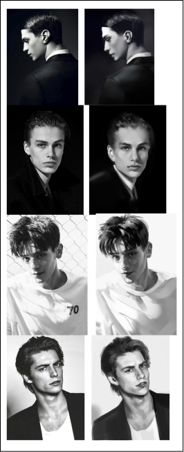
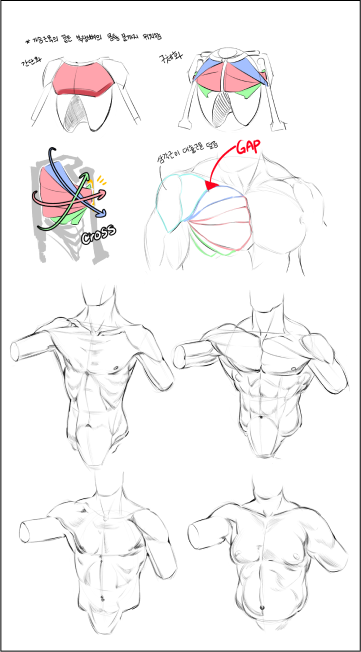
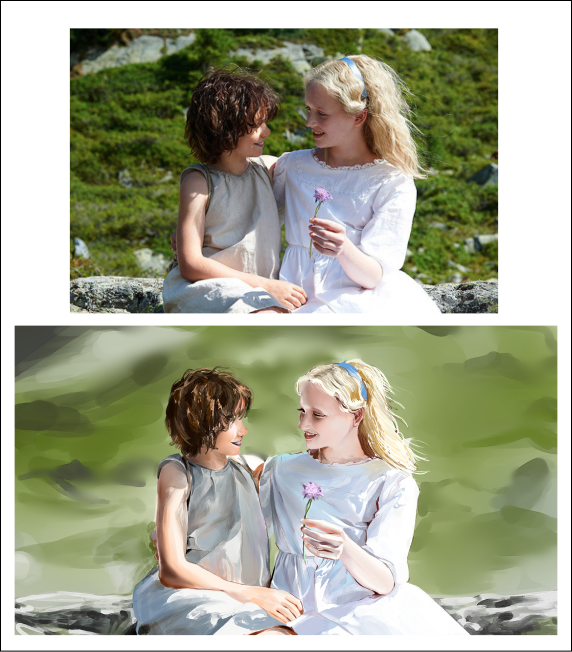
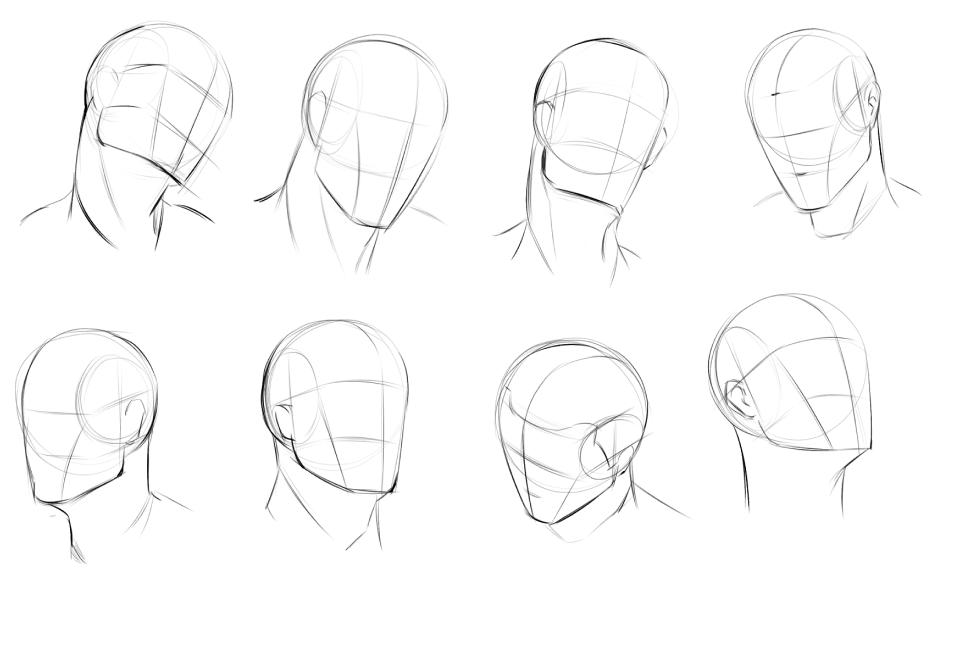
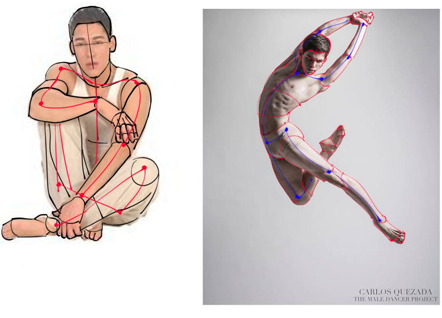

심화반의 경우 일일 크로키 뿐만 아니라 기본기를 다지는 실력 향상을 위하여
일주일마다 제시되는 주간 과제를 함께 진행해 주셔야 합니다.
주간 과제의 예시는 다음과 같습니다.
종류에 따라 과제 방법에 대한 설명이 필요할 경우 가이드를 함께 제시해 드리겠습니다.
가끔씩 지금까지 진행해온 과제 내용을 복습하거나, 이론을 다질 수 있도록
간단한 문제지가 배포될 예정입니다.
- 
모작
- 
골격/근육 구조 익히기
- 
미디어 장면 모작
- 
얼굴/인체 각도별 드로잉
- 
인물 사진 위에 덧그리기